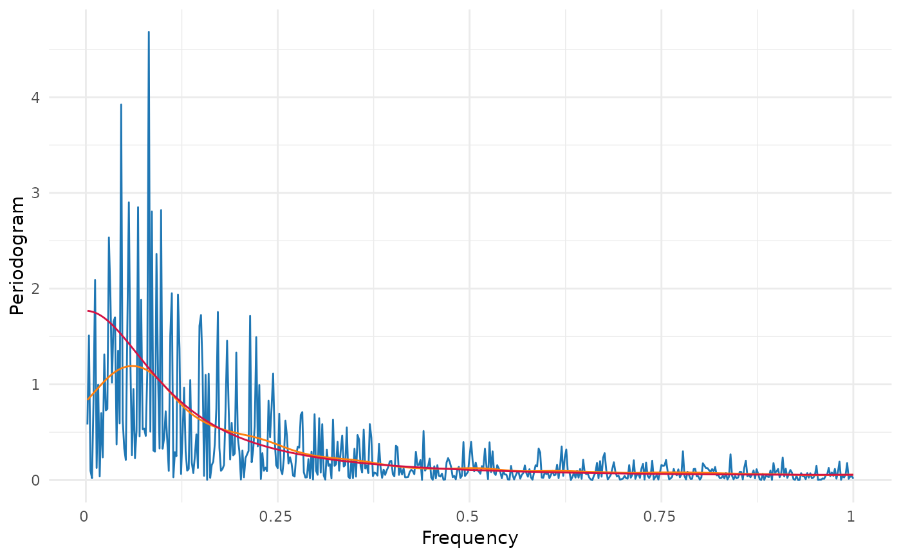

This function returns the smoothing periodogram of a stationary time serie, its plot and its Fourier frequency.
smooth_periodogram(y, plot = TRUE, spar = 0)
| y | (type: numeric) data vector. |
|---|---|
| plot | (type: logical) logical argument which allows to plot the periodogram. Defaults to TRUE. |
| spar | (type: numeric) smoothing parameter, typically (but not necessarily) in \((0,1].\) |
A list with with the smooth periodogram and the lambda values
smooth_periodogram computes the periodogram from y vector and
then smooth it with smoothing spline method, which basically
approximates a curve using a cubic spline (see more details in
smooth.spline). \(\lambda\) is the Fourier frequency
obtained through periodogram.
It must have caution with the minimum length of y, because
smooth.spline requires the entered vector has at least length 4 and
the length of y does not equal to the length of the data of the
periodogram that smooth.spline receives.
If it presents problems with tol (tolerance), see
smooth.spline.
#>set.seed(1776) ts.sim <- arima.sim(n = 1000, model = list(order = c(1, 0, 0), ar = 0.7)) per <- periodogram(ts.sim) aux <- smooth_periodogram(ts.sim, plot = FALSE, spar = .7) sm_p <- data.frame(x = aux$lambda, y = aux$smooth_periodogram) sp_d <- data.frame(x = aux$lambda, y = spectral_density(ar = 0.7, lambda = aux$lambda)) g <- per$plot g + geom_line(data = sm_p, aes(x,y), color = "#ff7f0e") + geom_line(data = sp_d, aes(x,y), color = "#d31244")